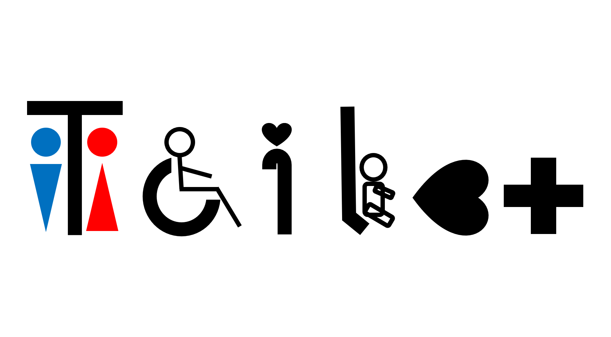
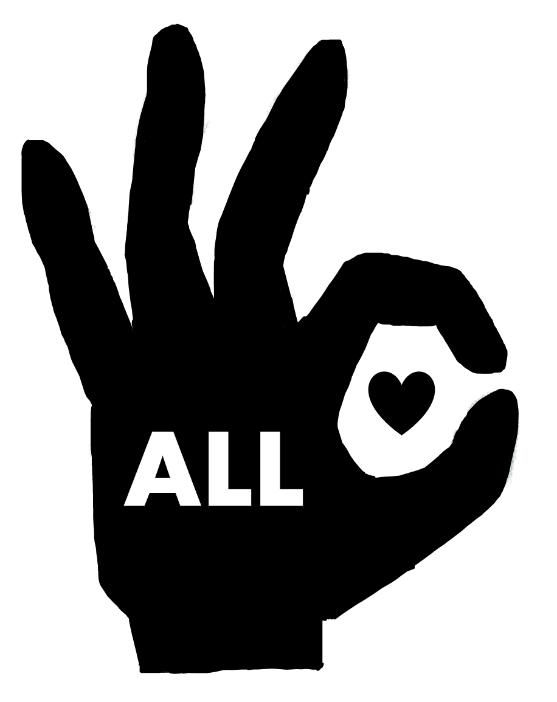
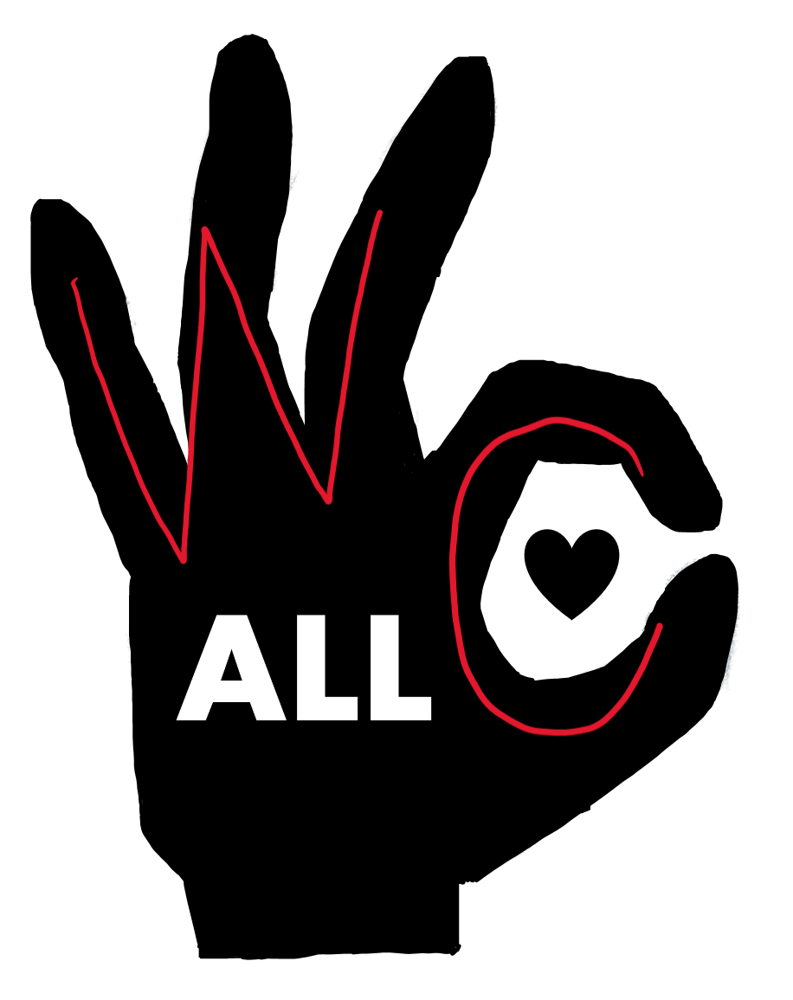
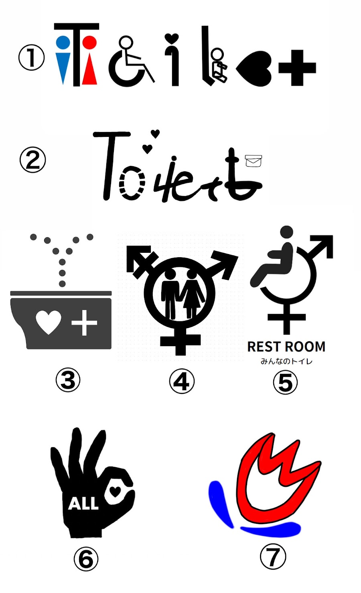
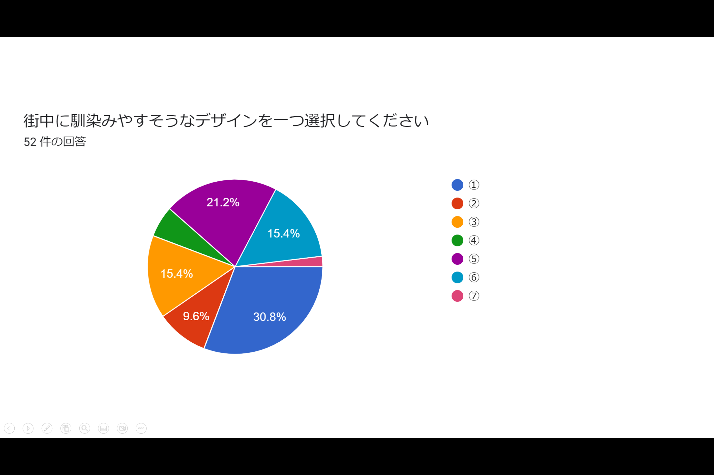
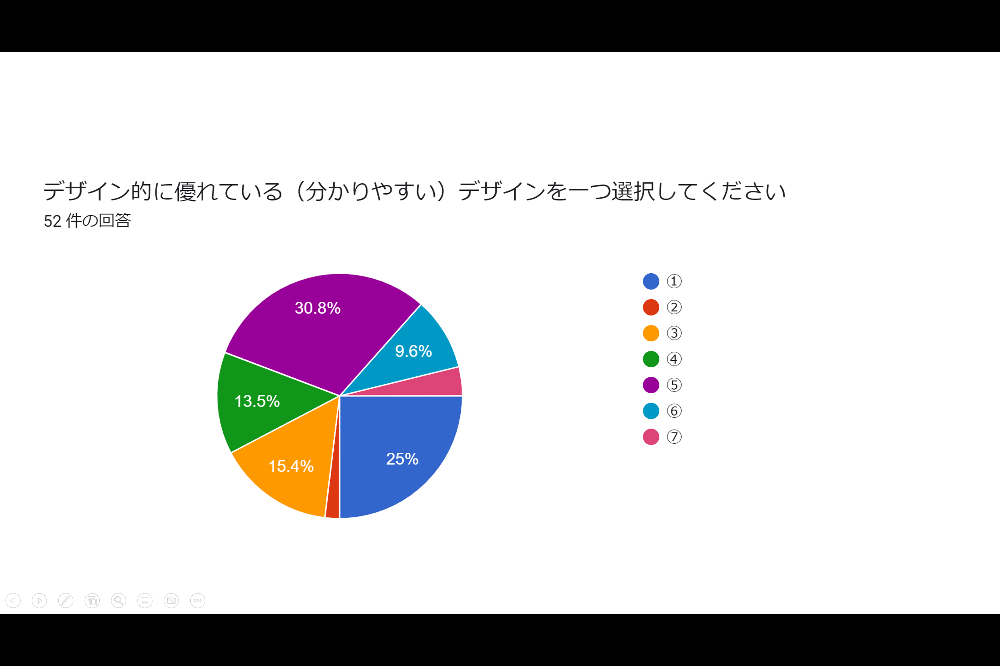
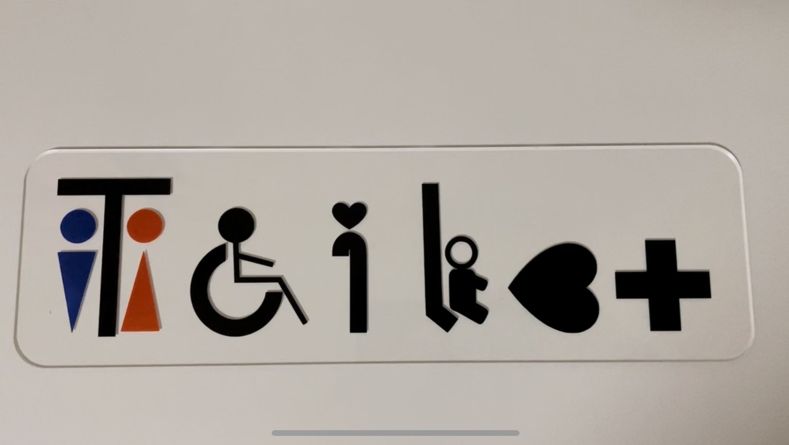

多目的トイレのマーク制作
最終プロジェクトで私は、班のメンバーと一目でわかる・その場に馴染む多目的トイレのマークを作ることにしました。
この課題はDesing for Othersの話し合いでトイレの場所がわからない人がいたことをみんなで共有したときから始まりました。
そこから、どこにでも馴染みやすく、且つわかりやすいトイレのマークを考えようということになりました。
しかし、また更に課題が発展し、「多目的トイレのマークってごちゃごちゃしてて馴染んでないよね」「もう少しわかりやすいマークできるんじゃない？」
ということで今回のテーマに至りました。
現在の多目的トイレのマークから改善したいところ
- マークが多くて馴染んでないように見える（車椅子、杖、赤ちゃんなど）
- 一目でトイレだとわかる
デザインを考える
一目でトイレだとわかる、その場に馴染む、多目的であることがわかることを意識しつつ沢山アイデアを考えました。

(落書きを含む)
このとき、多目的の要素を含ませつつ一つのマークにまとめるのは難しいと思い知らされました。
また、調べていくと、社会には様々なマークが存在していて、その色や形のひとつひとつにちゃんとした意味があることがわかりました。
（赤は女性、青は男性などのイメージがあるから、色をつけることで目立ちやすくはなるけど、伝えたいことが上手く伝わらない可能性があるなど）
そこで、今あるマークを利用し、すぐに理解してもらえるデザインのマークと、
今すぐに多目的トイレのマークと理解してもらうのは難しいけれど、多目的の意味をひとつにまとめて、今後世の中に広めていきたいデザインの二つを考えることにしました。
デザイン１

このマークは、今使われているピクトグラムなどを利用して「TOILET」の文字を表現しました。
「T」の部分は男女、「O」は車椅子、「I」は杖、「L」は赤ちゃん、「ET」でヘルプマーク、「T」だけでオストメイトを表現しています。
またハートには優しさ、優先の意味が込められています。
デザイン２

このマークは、ひとつのマークにまとめることを意識して作りました。
この手の形、一見OKマークをしているように見えるのですが、実は手話で「トイレ」を表現しています。(OKマークと理解されても間違えではないです。)

片手で「WC」を表しています。
今はこの手話を知らない人が多くOKマークと理解する人がほとんどだと思いますが、このマークと同時に手話も沢山の人に広まってほしいという思いも込めました。
手のひらには、多目的トイレの「誰でも使える」という意味で「ALL」を描き、デザイン1と同じく優しさ・優先のハートを取り入れています。
アンケート調査
マークを作る本来の目的は誰にでもわかりやすいデザインにすることなので、アンケート調査を実施することにしました。
アンケートはあみくらさんがGoogleフォームを使って作ってくれました。
班のみんなのインスタのストーリーなどを駆使してより多くの人にアンケートに答えてもらいました。
アンケートの対象は班のみんなで考えたマーク7個

質問内容は、「1,街中に馴染みやすそうなデザインはどれか（理由も）」と、 「2,デザイン的に優れている（わかりやすい）デザインはどれか（理由も）」の二つです。
アンケート結果
全部で52人の方がアンケートに答えてくれました。(2023年1月17日17時30分現在)


質問１の理由では、トイレ感がなくて馴染みやすそう、文字がなくてシンプル、おしゃれ、かわいいなどの意見が目立ちました。
反対に質問２では、トイレの文字が入っているから、トイレのイラストが描かれているからなどの理由が多くありました。
自分が考えたマークに関して言えば、デザイン２のマークは、予想通りOKマークと捉えている人が多かったのですが、
ハンドサインによって誰でも使えることがわかるという評価が得られたので、手話表現をもっと広めることができれば、より理想に近づけられると思いました。
デザインを形に変える
自分で考えたデザインをデジタルファブリケーションを使って形に変えていきます。
今回は、レーザーカッターとUVプリンターを使用しました。
完成品がこちら


家の扉に付けてみました。
サイズ感もちょうどよく、理想通りの目立ち具合です。
今回初めてUVプリンターを利用したのですが、注意する点が色々あり大変でした。
まず、プリンターでプリントできるものの大きさは最大30㎝ということ。
それを知らずにレーザーカッターの段階で45㎝のアクリル板を作ってしまいました。(ファブラボにあるアクリルの大きさが最大45㎝らしい)
そもそも大きさにこだわらずにデータを作ってしまったことが良くなかったので反省です。
そして、プリントの種類も、カラーの下に白い下地のようなものを入れるパターンと入れないパターン、
また、アクリルの表面か裏面どちらにプリントするのかなど色々ありました。
今回は、表面に白い下地をいれた状態でプリントしました。
白い下地を入れることでアクリルの下の色が透けないようにできます。
また裏面にプリントする場合はデザインを反転させる必要があるので面倒くさいそうです。
白い下地を入れるときは、カラーのデザインに加えて、プリンター専用の白色でもう一つデータを作る必要があるので注意が必要。